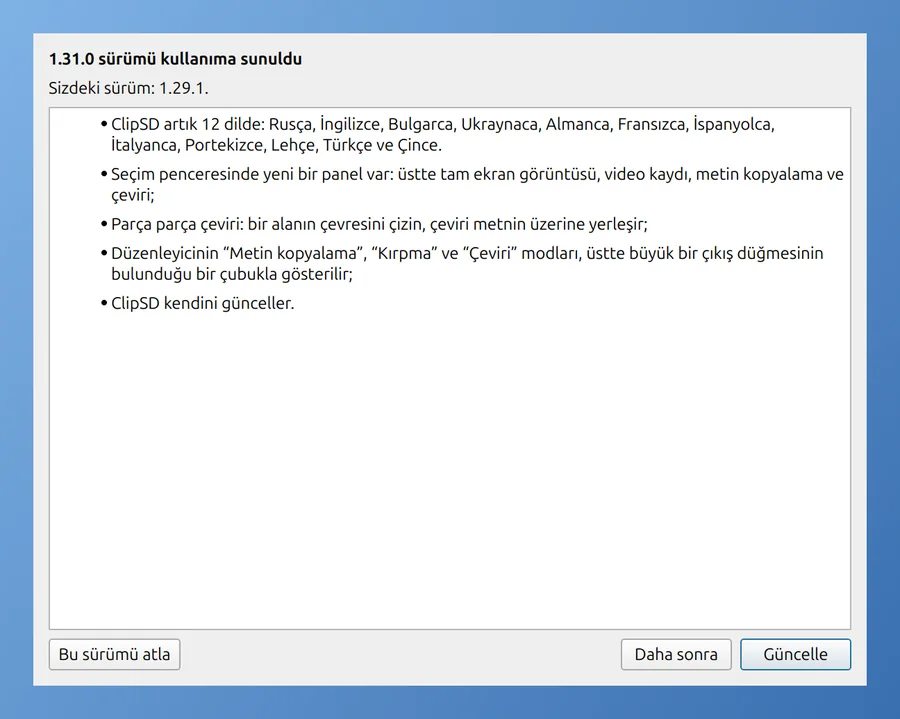

Sürüm geçmişi
Sürüm 1.31.0
çıkış tarihi
- ClipSD artık 12 dilde: Rusça, İngilizce, Bulgarca, Ukraynaca, Almanca, Fransızca, İspanyolca, İtalyanca, Portekizce, Lehçe, Türkçe ve Çince. Dil yeniden başlatmadan hemen değişir: saatin yanındaki simge menüsünden, düzenleyicideki küreden, tanıtımın ilk adımından veya ayarlardan.

- Seçim penceresinde yeni bir panel var: üstte tam ekran görüntüsü, video kaydı, metin kopyalama ve çeviri; altta “Düzenle”, “Kaydet” ve “Kopyala ve kapat”.

- Parça parça çeviri: bir alanın çevresini çizin, çeviri metnin üzerine yerleşir; ardından başka bir alanın çevresini çizin, o da çevrilir. Esc bu modu sonlandırır.

- Düzenleyicinin “Metin kopyalama”, “Kırpma” ve “Çeviri” modları, üstte büyük bir çıkış düğmesinin bulunduğu bir çubukla gösterilir; Esc önceki araca döner.

- ClipSD kendini günceller. Günde bir kez yeni sürüm olup olmadığını denetler ve “Güncelle”, “Daha sonra” veya “Bu sürümü atla” seçeneklerini sunar. Hemen denetlemek için simge menüsünden “Güncellemeleri denetle”yi seçin. Güncelleme dijital imzayla doğrulanır; yeni sürüm başlamazsa önceki sürüm geri yüklenir.
